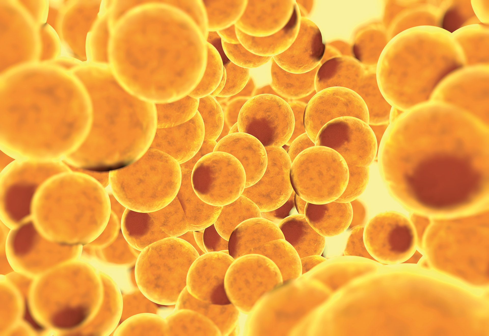
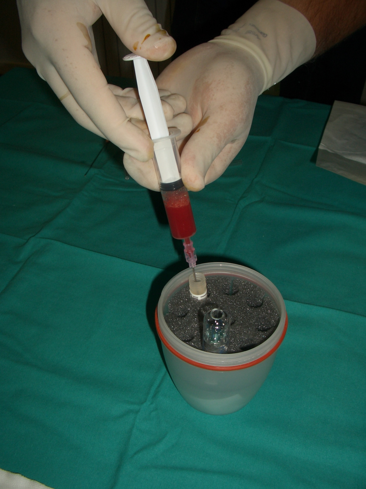

<!DOCTYPE html>
<html>
<head>
    <style>
        img {
            max-width: 100%;
            height: auto;
            float: left;
            margin-right: 20px;
        }
		</style>
		
<meta charset="UTF-8">
<meta name="Artrosi della caviglia" content="Informazioni sulla patologia e trattamenti ortopedici necessari" />
<title>Artrosi della Caviglia: Panoramica sulla Patologia</title>

<link href="sito web.css" rel="stylesheet" type="text/css" media="screen">
<link href="seconde immagini.css" rel="stylesheet" type="text/css">
<link href="terze immagine.css" rel="stylesheet" type="text/css">
<link href="grandezza testo.css" rel="stylesheet" type="text/css">
<link rel="icon" href="logo finale 1.png" type="image/x-icon">

</head>

<body>
<blockquote>
  <blockquote>
<a href="https://www.bevoniroberto.it"target="_self">
</a>

<h3>Artrosi della Caviglia: Panoramica sulla Patologia</h3>
  </blockquote>
</blockquote>
<blockquote>
  <blockquote>
<p>L'artrosi della caviglia è una grave patologia invalidante che colpisce l'1% della popolazione adulta. L'artrosi primaria è solitamente rara, mentre l'artrosi post-traumatica è più frequente: le fratture malleolari e le lesioni legamentose sono le cause più comuni. Dopo lesioni acute, vi è un cospicuo rischio di progressione degenerativa, che va dal 40% al 70% in caso di fratture complesse.</p>
  </blockquote>
</blockquote>
<blockquote>
  <blockquote>
    <blockquote>
      <h1>Opzioni chirurgiche</h1>
    </blockquote>
  </blockquote>
</blockquote>
<blockquote>
  <blockquote>
    <blockquote>
<div style="width: 100%;">
  
  
  <p style="text-align: left; outline: none;"> Il debridement artroscopico, l'artrodiastasi, l'osteotomia sono le attuali procedure di risparmio articolare, ma, negli studi disponibili, sono stati raggiunti risultati controversi, con esiti migliori in caso di degenerazione limitata. Solo l'osteotomia in caso di malallineamento è universalmente accettata come procedura di risparmio articolare, perché ripristinando l’allineamento articolare permette di migliorare la sua funzionalità. L'artrodesi è ancora considerata il gold standard in caso di trattamento chirurgico di artrosi grave, ma richiede un periodo postoperatorio lungo per la ripresa, e implica una riduzione della mobilità della caviglia. </p>
  <p style="text-align: right; outline: none;">&nbsp;</p>
  <p style="text-align: right; outline: none;">&nbsp;</p>
</div>
<figure>
  
  
  <p style="text-align: left; outline: none;">Recentemente, la protesi della caviglia ha ottenuto sempre più successo, ma gravi complicanze 
    post-operatorie e 
    rischi di procedure di revisione multiple,
    specialmente nei pazienti giovani, 
    sono i principali 
    svantaggi della procedura.<br>
    <br>
  &nbsp;<br>
  <br>
  </p>
</figure>
  <left>
<h1><br>
Medicina rigenerativa e procedure a risparmio articolare</h1>
<blockquote>
  <strong></strong>
  <p>Considerando gli svantaggi delle precedenti procedure in fase terminale e la giovane età media dei pazienti affetti da artrosi post traumatica, dovrebbero essere prese in considerazione procedure di risparmio articolare, soprattutto in caso di degenerazione precoce.</p>
<p>&nbsp;</p>
<p>&nbsp;</p>

<p>Nella degenerazione precoce, l'intera articolazione è interessata da una lieve progressione di deterioramento, con ancora un buon equilibrio reversibile tra processi anabolici e catabolici. Pertanto, possono essere auspicabili procedure chirurgiche con risparmio articolare, con l'obiettivo di ritardare la progressione degenerativa, posponendo o addirittura ovviando alle procedure allo stadio terminale quali l’artrodesi o la Protesi articolare. Il meccanismo biologico dell'osteoartrosi è stato studiato intensamente: è una patologia articolare, che colpisce la cartilagine, l'osso subcondrale e la membrana sinoviale. In particolare, il primo stadio è caratterizzato da un'attività catabolica reversibile con uno stato di condropenia Pertanto, sono state proposte procedure biologiche per l'artrosi precoce al fine di ritardare o evitare le procedure allo stadio terminale. Le cellule staminali mesenchimali (MSC) possono essere una buona soluzione per prevenire o invertire la degenerazione, grazie alle loro caratteristiche immunomodulatorie (in grado di controllare l'ambiente catabolico dell'articolazione) e alle loro capacità rigenerative osteocondrali (in grado di trattare i difetti condrali). Infatti, le MSC possono regolare la cascata di citochine e il rilascio di metalloproteinasi, ripristinando anche il tessuto osteocondrale. Dopo interessanti segnalazioni di cellule staminali mesenchimali seminate su scaffold e applicate a difetti cartilaginei in articolazioni non degenerate, il trapianto di cellule derivate da midollo osseo sembra essere una tecnica promettente per controllare la via degenerativa e ripristinare i difetti osteocondrali.&nbsp;&nbsp;</p>
</blockquote>
<h1><strong>Opzioni terapeutiche intrarticolari:</strong></h1>
<ul>
  <li>
    <h2>PRP</h2>
    
    <p>Il PRP (Plasma Rich Platelets) o concentrato piastrinico utilizzato nell’artrosi di caviglia, è stato utilizzato in passato, ma studi clinici, non hanno evidenziato alcun miglioramento nei pazienti trattati con questa terapia, rispetto a pazienti trattati con Placebo. (Liam D.A. et Al Jama [foto prp] LIPOGEMS®® è una tecnologia cellulare rigenerativa di nuova concezione che viene utilizzata per raccogliere, concentrare e trasferire le cellule staminali prelevate dal tessuto adiposo (ADSC) del paziente. È un prodotto di tessuto adiposo autologo non espanso e microfrazionato per il trattamento di lesioni articolari e tendinee. Le articolazioni in cui viene più frequentemente applicata sono l’anca, il ginocchio e la caviglia. Possono essere isolate dalla cosiddetta frazione stromale vascolare (stromal vascular fraction, SVF) ottenibile dal tessuto adiposo mediante digestione enzimatica, e possono essere moltiplicate in laboratorio. Ciò rende possibile ottenere numeri significativi di staminali per applicazioni cliniche anche da piccoli prelievi di tessuto adiposo. <br>
      <br>
    &nbsp;</p>
</li>
  <li>
    <h2>Cellule staminale mesenchimali prelevate da grasso</h2>
  </li>
</ul>
<blockquote>
  <p>Le iniezioni di cellule staminali mesenchimali prelevate da tessuto adiposo (ADSC) vengono utilizzate per accelerare la guarigione e ridurre il dolore nell'artrosi da moderata a grave e per le lesioni acute. Il vantaggio teorico delle ADSC rispetto al PRP è che si ottiene una concentrazione molto più elevata di fattori di crescita e un maggiore potenziale antinfiammatorio.&nbsp;</p>
  <p>Il processo per ottenere queste potenti cellule rigenerative è simile al PRP che richiede anche 2 passaggi:&nbsp;</p>
</blockquote>
<ul>
  
  
  <p>&nbsp;</p>
  <li>La prima parte richiede al medico di aspirare le cellule presenti nel grasso addominale, la procedura è simile ad una mini liposuzione e viene eseguita come procedura ambulatoriale in anestesia locale. </li>
</ul>
<p>&nbsp;</p>
<p>&nbsp;</p>
<p>&nbsp;</p>
<ul>
  
  <li>La seconda parte prevede la concentrazione delle cellule utilizzando uno specifico sistema che mantiene inalterate le proprietà delle cellule staminali e quindi l'iniezione delle cellule staminali acquisite nell'area desiderata.</li>
</ul>
<h1><br>
LIPOGEMS® e Trattamenti Rigenerativi</h1>
<p>LIPOGEMS® preserva le cellule riparatrici all'interno del grasso Uno dei vantaggi di LIPOGEMS® è che mantiene le cellule staminali all'interno del grasso (inclusi adipociti, cellule staminali, periciti e altre cellule) senza compromettere la struttura e la funzione delle cellule. LIPOGEMS® mantiene inalterate le funzioni riparatrici delle cellule staminali all'interno del grasso lavorando come un'unità funzionale come fanno nel corpo in condizioni normali. Ciò consente al tuo corpo di guarire in modo naturale riparando, ricostruendo e sostituendo i tessuti danneggiati o feriti. </p>
<p>LIPOGEMS® preserva le cellule riparatrici all'interno del grasso Uno dei vantaggi di LIPOGEMS® è che mantiene le cellule staminali all'interno del grasso (inclusi adipociti, cellule staminali, periciti e altre cellule) senza compromettere la struttura e la funzione delle cellule. LIPOGEMS® mantiene inalterate le funzioni riparatrici delle cellule staminali all'interno del grasso lavorando come un'unità funzionale come fanno nel corpo in condizioni normali. Ciò consente al tuo corpo di guarire in modo naturale riparando, ricostruendo e sostituendo i tessuti danneggiati o feriti.<br>
</p>
<h2>Dimensione ottimale&nbsp;</h2>
<p> Il dispositivo tratta delicatamente il tessuto adiposo portandolo ad una dimensione ottimale che è di facile utilizzo per l'iniezione, e consente anche una maggiore interazione con il sito di trattamento per aiutare a riparare, ricostruire, sostituire il tessuto danneggiato o lesionato.&nbsp;</p>
<p>Per i pazienti che soffrono di patologie ortopediche che coinvolgono più aree del loro corpo, le infiltrazioni con lipogem possono essere usate contemporaneamente su più siti, con un unico prelievo. &nbsp;
<h2>
</p>
<h1>Meccanismi d'azione</h1>
<p>Negli ultimi 15 anni, è stato dimostrato che le MSC umane possono anche promuovere la vasculogenesi, il principale meccanismo coinvolto nell'efficacia della riparazione dei tessuti, nella differenziazione cardiovascolare e nella riparazione del miocardio [3], e hanno migliorato la rivascolarizzazione dell'innesto di isole nei ratti diabetici, migliorando il successo dell'attecchimento [4]. Tutte le suddette scoperte hanno ispirato gli studi sulla tecnologia Lipogems® (Lipogems International SpA, Milano, Italia). L'attenzione è sempre più focalizzata sulle ASC derivate dal tessuto adiposo umano e animale a causa della loro abbondanza e facilità di accesso. Queste cellule multipotenti possono differenziarsi in adipociti maturi così come in condrociti, osteoblasti, miociti, epatociti, cellule neuronali ed endoteliali e altre linee cellulari, come suggerito da prove in vitro, ed in vivo, e questo potenziale può essere utilizzato per rigenerare i tessuti danneggiati. Inoltre, le ASC secernono una varietà di molecole bioattive che agiscono in modo paracrino per innescare e sostenere risposte angiogeniche, antifibrotiche, antiapoptotiche e immunomodulatorie nel tessuto bersaglio. </p>
</body>

</html>
